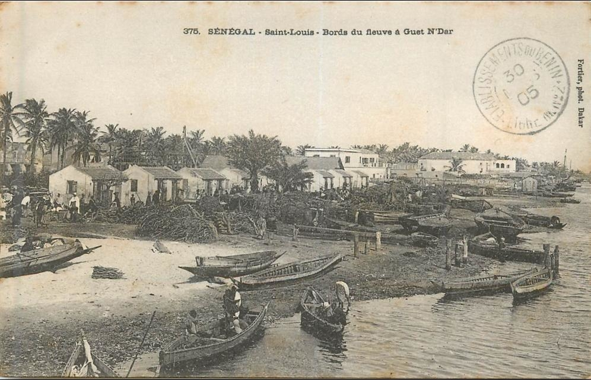

L'histoire coloniale et l'imposition du français
L'implantation du français au Sénégal s'inscrit dans une histoire longue de plus de trois siècles, marquée par des étapes successives qui ont profondément transformé le paysage linguistique de la région.
Les comptoirs commerciaux (XVIIe–XVIIIe siècles)
La présence française sur la côte sénégalaise commence au XVIIe siècle avec l'établissement de comptoirs commerciaux. Saint-Louis, fondée en 1659 sur une île à l'embouchure du fleuve Sénégal, devient la première colonie française permanente en Afrique de l'Ouest. L'île de Gorée, située en face de l'actuelle Dakar, joue un rôle similaire et devient tristement célèbre pour son implication dans le commerce transatlantique des esclaves.
À cette époque, le français reste cantonné aux comptoirs : il sert de langue de commerce et d'administration entre une poignée de colons, de métis et d'auxiliaires africains. Un créole, parfois appelé « petit français » de Saint-Louis, se développe localement, mêlant le français à des éléments du wolof.

Saint-Louis du Sénégal sur une carte postale
L'expansion de Faidherbe (1854–1865)
Le tournant décisif survient au milieu du XIXe siècle avec Louis Faidherbe, gouverneur du Sénégal de 1854 à 1865. Faidherbe lance une politique d'expansion militaire qui pousse la frontière coloniale loin à l'intérieur des terres, contre les royaumes wolofs, sérères et toucouleurs. Il fonde aussi la ville de Dakar en 1857. Avec l'expansion territoriale vient l'expansion administrative : pour gouverner ces nouvelles régions, la France a besoin de cadres parlant français, et donc d'un système éducatif capable de les former.
L'assimilation et les Quatre Communes
À partir de la fin du XIXe siècle, la France met en place ce que l'on appelle la politique d'assimilation. Dans les Quatre Communes — Saint-Louis, Gorée, Rufisque et Dakar — les habitants africains, appelés « originaires », bénéficient théoriquement du statut de citoyen français, peuvent voter et envoyer un député à l'Assemblée nationale à Paris. Cette citoyenneté s'accompagne d'une exigence : maîtriser le français et adopter les normes culturelles françaises. Ailleurs, dans le reste du Sénégal, les habitants restent des « sujets » soumis au régime de l'indigénat, sans droits politiques.
L'école coloniale, principal vecteur de la langue
L'école coloniale devient le principal vecteur de diffusion du français. L'École normale William-Ponty, fondée à Saint-Louis puis transférée à Gorée, forme les futurs instituteurs, médecins et fonctionnaires africains de l'AOF (Afrique-Occidentale française). L'enseignement s'y fait exclusivement en français, et l'usage des langues africaines est souvent interdit dans la cour de récréation. Cette école produit une élite francophone qui jouera un rôle politique majeur, y compris dans les mouvements anticoloniaux : Léopold Sédar Senghor en est l'un des produits les plus célèbres.
La résistance des confréries soufies
Cette imposition linguistique rencontre cependant des résistances. La plus puissante n'est pas politique : elle est religieuse et culturelle. Le Sénégal est très majoritairement musulman, et l'islam s'y organise autour de grandes confréries soufies. La confrérie mouride, fondée à la fin du XIXe siècle par le cheikh Ahmadou Bamba, connaît un essor considérable précisément à l'époque de la conquête française. Bamba, exilé par les autorités coloniales au Gabon puis en Mauritanie, devient une figure de résistance spirituelle. Ses enseignements, ses poèmes écrits en arabe, son réseau de disciples créent un espace social et linguistique qui échappe largement au contrôle français.
La confrérie tidjane (Tijaniyya), elle aussi très influente, joue un rôle comparable. Ces confréries maintiennent l'arabe comme langue de savoir religieux, le wolof comme langue de prédication et d'organisation sociale, et limitent ainsi la pénétration culturelle du français au-delà du domaine administratif et scolaire.

Cheikh Ahmadou Bamba, fondateur de la confrérie mouride
L'héritage à l'indépendance
Au moment de l'indépendance, en 1960, le français était bien implanté comme langue de l'État, mais son usage réel restait minoritaire. Cette tension entre la langue officielle imposée et les langues vivantes du peuple allait structurer toute la politique linguistique du Sénégal indépendant — c'est ce que nous allons voir sur la page suivante.